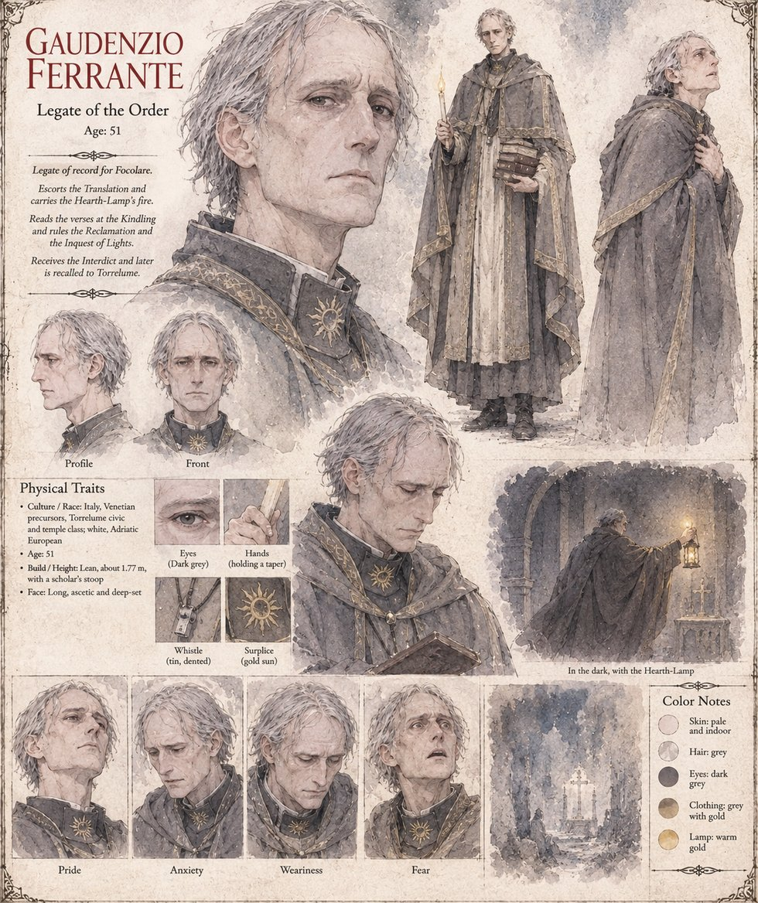
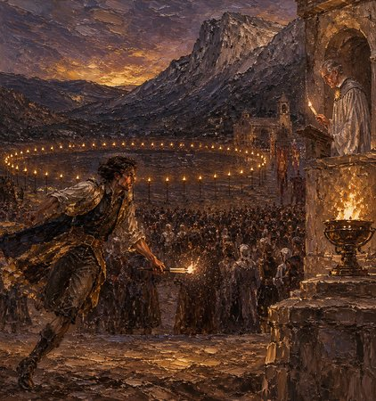

Gaudenzio Ferrante
Legate of the Order, Legate of record for Focolare · reader of the three verses at the Kindling · recalled to Torrelume · 51
A lean man of fifty-one with a scholar’s stoop and a soldier’s dislike of surprise, chosen to escort the Translation because, by the Order’s register, he was its most reliable pair of hands. He carries the Hearth-Lamp’s fire upriver, keeps a small lamp burning beside his berth, and wears under his surplice, on a cord gone dark with age, a child’s tin whistle, dented and dull, that no one has ever heard him play. He names the moths petitioners. Walking the line at the northern bend he tells Agata that he is afraid of the dark, which is awkward in a Legate; he rules the sexton’s graveyard Dark Ground. After Ilario is taken he keeps the Kindling at the usual hour, and after Nico runs past the Line he rules, standing, with the door shut, that the Reclamation applies to the second and not to the first, asking his Reckoner to prepare the forms.
At the Inquest of Lights he tells Bruna It is your son’s voice, Sartor. It is not your son. and finds the voice at the Well a counterfeit lamp; he refuses a petition for a second Translation. When Agata brings him her two columns he has already understood them, and chooses the reading the tithe-roll makes possible over the one that would make the Ring a bait. In the second Jorren he obtains the Great Lighting, four hundred barrels of blessed oil, and weeps afterward, alone, at what he takes for his victory. He orders the Weeding; under the Interdict he reads the writ through to the end and puts out the Hearth-Lamp with his own hand. In the war’s second winter he still speaks the three verses before the empty niche, and one night writes Not counted at the foot of her sheet, an objection he does not yet recognise as one.
The day before he is recalled, Agata has him sign the reversal of her brother’s Reclamation. He asks whether he was wrong; she says You were consistent. He plays the whistle once, on purpose, badly; at the fence he tells the foreigner Higaide that he wrote unaccounted of him meant kindly, and bows to him, and leaves down the east-bank road. The Order’s chronicle will enter him as the Steadfast. A Legate who dies in his sleep in Torrelume, and asks to be laid in Dark Ground beside a lamplighter he once declared unlit, is buried by the sexton with a tin whistle beside the name; the manuscript does not name him, but the whistle does.
The manuscript gives his age, his stoop, the whistle, the three books, the surplice and the small lamp; it gives no height, face, hair or eye colour. The sheet’s lean build of about 1.77 m, long, ascetic, deep-set face, grey hair, dark grey eyes, grey cloak with a gold-embroidered border and a gold sun at the collar are its own, as are its panels Pride, Anxiety, Weariness and Fear, its scene In the dark, with the Hearth-Lamp and its unlabelled second scene panel (a dim hall with an altar and a standard). Its italic title lines (legate of record for Focolare; escorts the Translation and carries the Hearth-Lamp’s fire; reads the verses at the Kindling and rules the Reclamation and the Inquest of Lights; receives the Interdict and later is recalled to Torrelume) follow the manuscript.
“It is your son’s voice, Sartor. It is not your son.”
Appears In

Related Subjects


Related Records

On the third dusk in Val Muta the Ring is closed in what the settlers call simply the lighting. Gaudenzio says the three verses over the Hearth-Lamp and touches his taper to the flame, and the lamplighters carry the fire round the line in relays, a necklace of warm points assembling itself out of the dark. Ilario, raised to lamplighter that afternoon with a handshake and a small brass badge, runs the final eleven in a flat-out terror of dropping something.

On the day of the Great Lighting, after five days of stacking, two hundred men of the parish cross the Line at noon under the Legate’s banner, roll four hundred barrels of the Order’s blessed oil to the rim of the hollow and empty them over the faggots stacked against the stalks. Gaudenzio speaks the three verses over the rim; at the last word two hundred torches go down, and it burns for eleven hours, white at first, with a roar that the whole valley felt in its chest.